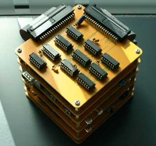

Atari co-founders Nolan Bushnell and Ted Dabney had already developed a video arcade game the previous year, known as Computer Space. Despite being more technically advanced than Pong, it didn't achieve the success they were hoping for - the rules of the game weren't obvious, and players had to read the instructions to understand how to play.
They quickly realized that arcade-goers preferred more intuitive video games that were easy to pick up and play. In May 1972, Nolan visited a demonstration of the soon-to-be-released Magnavox Odyssey, an early consumer-grade home game console based largely on analog circuitry. There, he realized that its simple "Tennis" game could be improved if it was implemented with the same digital logic used in Computer Space.
The task of developing Pong was given to new hire Allan Alcorn, who was instructed to create a digital tennis video game with counters to keep track of the score.
In the early 70's, microprocessors were expensive and rudimentary. Therefore, Pong was designed entirely with discrete TTL logic! It's a video game implemented with no software whatsoever, a concept that sounds unthinkable nowadays.
Upon completing the basic game, Allan added some extra features to make the game more interesting - the ball would speed up if players could keep up a volley without missing, and would bounce back at a variable angle depending on where the paddles hit it.
One of the last features added was sound. Timing signals that were already in the circuit were fed through a loudspeaker to create the characteristic sounds that inspired the name "Pong". (or "Ping" in the case of my replica, since Atari still holds the rights to the name "Pong".)
A few years after the development of Pong, large-scale integration would allow a simplified version of the game logic to be crammed into a single custom IC. However, these later home versions of Pong usually simplified the ball velocity logic in comparison to the original arcade game.
In the years following the development of Pong, many other arcade games would be implemented entirely out of TTL logic. The introduction of the Intel 8080 CPU in 1974 gradually brought an end to this era of arcade gaming in favor of microprocessor-based games, and by 1980, production of TTL arcade games was a thing of the past.
The following bugs have been corrected in Modular Ping:
The pinout of these connectors (which I've named PingBus A and B) can be found in the schematics, available below in the "Downloads" section.
The boards are designed to stack on top of each other with standard M3 screws and standoffs. Nylon fixtures can be used, but I recommend using metal ones to improve grounding between boards.
In total, the base system requires 63 ICs. This is slightly less than the original Pong circuit, due to the usage of the 74LS393, 74LS390 and NE556N - dual versions of the 74LS93, 74LS90 and NE555N, respectively.
The number of ICs which are no longer produced has also been reduced significantly. The only two components that aren't available directly from Mouser/Digikey are the 74LS48 used for decoding the score and the NE556N used to generate the delay for each paddle. Due to the layout of the circuit, different NE556 variants will give different results, potentially causing incorrect paddle range or non-linear control. For correct operation, look for an NE556N produced by Signetics.
In the future, I may try designing an alternative paddle circuit that uses a modern replacement for the NE556N, such as the 74LS221.
 Interactive Bill of Materials - Power, Sync, Video
Interactive Bill of Materials - Power, Sync, Video
HTML document, 373 KB
 Interactive Bill of Materials - Paddles, Game Control
Interactive Bill of Materials - Paddles, Game Control
HTML document, 387 KB
 Interactive Bill of Materials - Score
Interactive Bill of Materials - Score
HTML document, 338 KB
 Interactive Bill of Materials - Vertical Ball, Sound
Interactive Bill of Materials - Vertical Ball, Sound
HTML document, 359 KB
 Interactive Bill of Materials - Horizontal Ball
Interactive Bill of Materials - Horizontal Ball
HTML document, 307 KB
 Schematic - Power, Sync, Video
Schematic - Power, Sync, Video
PDF document, 512 KB
 Schematic - Paddles, Game Control
Schematic - Paddles, Game Control
PDF document, 608 KB
 Schematic - Score
Schematic - Score
PDF document, 509 KB
 Schematic - Vertical Ball, Sound
Schematic - Vertical Ball, Sound
PDF document, 459 KB
 Schematic - Horizontal Ball
Schematic - Horizontal Ball
PDF document, 429 KB
 PCB Gerbers - Base System
PCB Gerbers - Base System
ZIP archive, 1.63 MB - Production files for
each PCB in the base system.
 KiCad Files - Base System
KiCad Files - Base System
ZIP archive, 3.78 MB - Useful if you want
to make modifications to the PCBs. Made with KiCad 9.
 Custom Fonts
Custom Fonts
ZIP archive, 131 KB - Custom fonts used for
the KiCad files. Only needed if you want to modify these files.
 Other Schematics
Other Schematics
ZIP archive, 12.8 MB - Various schematics
and technical descriptions of the original Pong circuit from other sources.
Note that there are several errors in "REDRAWN_PongSchematic.pdf".
 Original Schematics
Original Schematics
ZIP archive, 13.5 MB - Atari's original schematics
for revision E of Pong in the highest quality available. Taken from the
1974 Atari Operator's Handbook, the rest of which is available here.
Note that pins 1 and 10 of gate A6 are incorrectly switched - this caused
a minor bug in the original arcade circuit.
Ralph Baer: Designed the first video game that worked with a household TV set. His invention would later become the Magnavox Odyssey, the first mass-produced video game console and the inspiration for Pong.
Allan Alcorn, Nolan Bushnell and Ted Dabney: Developed the arcade version of Pong.
Dr. Hugo R. Holden: Reverse engineered the functionality of Pong, creating an excellent explanation of how each section of the system works.
Paul Falstad: Created a logic simulation showing how each section of Pong works.
David Winter: Extensively documented the early history of video games (including the many variants of Pong) on pong-story.com.
Last updated on Aug 10, 2025.
This page was first uploaded on Aug 10, 2025.
https://www.Free-Counters.org
visitors since Dec 26, 2025.
{kind=link}